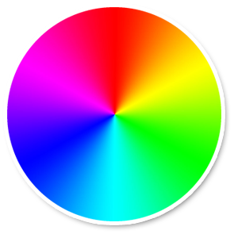

©2010 Google -
Code Home -
Terms of Service -
Privacy Policy -
Site Directory
Google Code offered in:
English -
Español -
日本語 -
한국어 -
Português -
Pусский -
中文(简体) -
中文(繁體)
Maps API for Flash
- Developer Guide
- API Reference
Code Samples:
More Resources:
Maps JavaScript API V3
Maps Javascript API V2
(Deprecated API)
Maps Data API
(Deprecated API)
Static Maps API
Earth API
Includes enterprise licensing and support
Google Maps API for Flash Map Types
Map Types
This document discusses the types of maps you can display using the
Google Maps API for Flash. The API uses a MapType
object to hold information about these maps. The IMapType
interface defines the display and usage of map tiles and
the translation of coordinate systems from screen coordinates to world
coordinates (on the map). Each MapType must contain a
few methods to handle retrieval and release of tiles, and properties
that define its visual behavior.
The inner workings of map types within the Maps API is an advanced topic. Most developers simply use the basic map types noted below. However, you can modify the presentation of existing map types using Styled Maps.
Basic Map Types
There are many types of maps available within the Google Maps API for Flash. In addition to the familiar "painted" road map tiles, the Google Maps API for Flash also supports other maps types.
The following map types are available in the Google Maps API:
NORMAL_MAP_TYPE- the default viewSATELLITE_MAP_TYPE- showing Google Earth satellite imagesHYBRID_MAP_TYPE- showing a mixture of normal and satellite viewsPHYSICAL_MAP_TYPE- showing a physical relief map of the surface of the EarthDEFAULT_MAP_TYPES- an array of these four types, useful for iterative processing
You can set the map type using the MapOptions'
mapType property. For example, the following code sets the map to
use the satellite view from Google Earth:
private function onMapPreinitialize(event:Event):void {
var myMapOptions:MapOptions = new MapOptions();
myMapOptions.zoom = 14;
myMapOptions.center = new LatLng(40.736072,-73.992062);
myMapOptions.mapType = MapType.SATELLITE_MAP_TYPE;
this.map.setInitOptions(myMapOptions);
}
Styled Maps
The StyledMapType allows you to customize the presentation
of the standard Google base maps, changing the visual display of such components
as roads, parks, and built-up areas to reflect a different style than that used
in the default map type. These components are known as features and
a StyledMapType allows you to select these features and apply
visual styles to their display (including hiding them entirely). With
these changes, the map can be made to emphasize particular components or
complement content within the surrounding page.
The StyledMapType() constructor takes an array of
MapTypeStyle objects and an optional StyledMapTypeOptions
object as arguments. The StyledMapTypeOptions object allows
you to provide a name for the styled map which can be displayed within a
map type control.
A styled map contains a set of styles which define rules
on selections. Each MapTypeStyle object defines the
following:
- A
MapTypeStyleFeatureTypedefining the type of features this style will affect - A
MapTypeStyleElementTypeindicating the scope of the features to select - An array of
MapTypeStyleRuleoperations to apply, in order, to the selection
The combination of features and elements defines the selection of elements on which to apply operations (known as rules).
Selecting Map Features
A map consists of a set of features, such as roads
or parks, which are specified using a MapTypeStyleFeatureType.
The feature types form a category tree, with
MapTypeStyleFeatureType.ALL as the root. The full list of
features for selection within a map is documented in the
Maps API for Flash reference. Specifying the feature as
MapTypeStyleFeatureType.ALL will select all map elements.
Some feature type categories contain sub-categories
(LANDSCAPE_NATURAL or ROAD_LOCAL, for example).
If the parent feature (ROAD, for example) is specified, then
styles applied to this selection will be applied to all roads, including
sub-categories.
Additionally, some features on a map typically consist of different
elements. A road, for example, consists of not only the graphical
line (geometry) on the map, but the text denoting its name (labels)
attached to the map. Elements within features are selected by specifying
a category of type MapTypeStyleElementType.
The following element types are supported:
ALL(default) selects all elements of that feature.GEOMETRYselects only geometric elements of that feature.LABELSselects only textual labels associated with that feature.
If no element type is specified, the styles will be applied to all elements regardless of element type.
Style Rules
Style rules are formatting options of type MapTypeStyleRule
which are applied to the features and elements specified within each
MapTypeStyle.
The following MapTypeStyleRule options are currently
supported:
hue(theColorindicating an RGB hex value) indicates the "base" color of the element. (* See usage note below.)lightness(a floating point value between-100and100) indicates the percentage change in brightness of the element. Negative values increase darkness (where -100 specifies black) while positive values increase brightness (where +100 specifies white).saturation(a floating point value between-100and100) indicates the percentage change in intensity of the basic color to apply to the element.gamma(a floating point value between0.01and10.0, where1.0applies no correction) indicates the amount of gamma correction to apply to the element. Gammas modify the lightness of hues in a non-linear fashion, while ignoring white or black values. Gammas are typically used to modify the contrast of multiple elements. For example, you could modify the gamma to increase or decrease the contrast between the edges and interiors of elements. Low gamma values (< 1) increase contrast, while high values (> 1) decrease contrast.inverse_lightness(iftrue) simply inverts the existing lightness.visibility('on','off', or'simplified') indicates whether and how the element appears on the map. Asimplifiedvisibility indicates that the map should simplify the presentation of those elements as it sees fit. (A simplified road structure may show fewer roads, for example.)
Style rules must be applied as separate, distinct operations, and are
applied in the order they appear within the MapTypeStyleRule
array. Do not combine multiple operations into a single rule;
instead, define each operation as a separate element in the array of rules.
Order is important, as some rules are not commutative. Features
and/or elements that are modified through rules
(usually) already have existing styles; the rules act on those existing
styles, if present.
Note that we use the
Hue, Saturation, Lightness (HSL) model to denote color within style
rules. These operations to define color are common within
graphic design. Hue indicates the basic color, saturation
indicates the intensity of that color, and lightness indicates the
relative amount of white or black in the constituent color. All three
HSL values can be mapped to RGB values (and vice versa).
Gamma
correction acts to modify saturation over the color space, generally
to increase or decrease contrast. Additionally, the HSL model defines color
within a coordinate space where hue indicates the orientation
within a color wheel, while saturation and lightness indicate amplitudes
along different axes. Hues are measured within an RGB color space,
which is similar to most RGB color spaces, except that shades of white and
black are absent.

An RGB Color Wheel
Note: while hue takes
a Color (uint) corresponding to an HTML hex
color value, it only uses this value to determine the basic
color (its orientation around the color wheel), not its saturation or
lightness, which are indicated separately as percentage changes. For
example, the hue for pure green may be defined
as GREEN (0x00ff00) or 0x000100
within the hue property and both hues will be identical.
(Both values point to pure green in the HSL color model.) RGB
hue values which consist of equal parts Red, Green and
Blue — such as BLACK (0x000000) and
WHITE (0xffffff) and all the pure shades
of grey — do not indicate a hue whatsoever, as none of those
values indicate an orientation in the HSL coordinate space. To indicate
black, white or grey, you must remove all saturation (set
the value to -100) and adjust lightness
instead.
Additionally, when modifying existing features which already have a
color scheme, changing a value such as hue does not change
its existing saturation or lightness.
The following specification selects the geometry for all local roads
and applies a hue of GREEN and a
saturation of 100:
var styles:Array = [
new MapTypeStyle(MapTypeStyleFeatureType.ROAD_LOCAL,
MapTypeStyleElementType.GEOMETRY,
[MapTypeStyleRule.hue(0x00ff00),
MapTypeStyleRule.saturation(100)])
];
The following example displays a map of Brooklyn where roads have been changed to bright green and the residential areas have been changed to black:
private function onMapReady(event:Event):void {
var hipHopStyles:Array = [
new MapTypeStyle(MapTypeStyleFeatureType.ROAD_LOCAL,
MapTypeStyleElementType.GEOMETRY,
[MapTypeStyleRule.hue(0x00ff00),
MapTypeStyleRule.saturation(100)]),
new MapTypeStyle(MapTypeStyleFeatureType.LANDSCAPE,
MapTypeStyleElementType.GEOMETRY,
[MapTypeStyleRule.lightness(-100)])
];
var styledMapOptions:StyledMapTypeOptions = new StyledMapTypeOptions({
name: 'Hip Hop',
alt: 'HipHop'
});
var styledMapType:StyledMapType = new StyledMapType(hipHopStyles, styledMapOptions);
map.addMapType(styledMapType);
map.addControl(new MapTypeControl());
map.setCenter(new LatLng(40.6743890, -73.9455), 12, styledMapType);
}
View example (StyledMapSimple.html)
View Source (StyledMapSimple.mxml)
The following more complicated example uses several operations and simplifications to approximate the look of a retro US road atlas:
private var chicago:LatLng = new LatLng(41.850033, -87.650052);
private function onMapReady(event:Event):void {
var roadAtlasStyles:Array = [
new MapTypeStyle(MapTypeStyleFeatureType.ROAD_HIGHWAY,
MapTypeStyleElementType.GEOMETRY,
[MapTypeStyleRule.hue(0xff0022),
MapTypeStyleRule.saturation(60),
MapTypeStyleRule.lightness(-20)]),
new MapTypeStyle(MapTypeStyleFeatureType.ROAD_ARTERIAL,
MapTypeStyleElementType.GEOMETRY,
[MapTypeStyleRule.hue(0x2200ff),
MapTypeStyleRule.lightness(-40),
MapTypeStyleRule.visibility("simplified"),
MapTypeStyleRule.saturation(30)]),
new MapTypeStyle(MapTypeStyleFeatureType.ROAD_LOCAL,
MapTypeStyleElementType.ALL,
[MapTypeStyleRule.hue(0xf6ff00),
MapTypeStyleRule.saturation(50),
MapTypeStyleRule.gamma(0.7),
MapTypeStyleRule.visibility("simplified")]),
new MapTypeStyle(MapTypeStyleElementType.GEOMETRY,
MapTypeStyleFeatureType.WATER,
[MapTypeStyleRule.saturation(40),
MapTypeStyleRule.lightness(40)]),
new MapTypeStyle(MapTypeStyleFeatureType.ROAD_HIGHWAY,
MapTypeStyleElementType.LABELS,
[MapTypeStyleRule.visibility("on"),
MapTypeStyleRule.saturation(98)]),
new MapTypeStyle(MapTypeStyleFeatureType.ADMINISTRATIVE_LOCALITY,
MapTypeStyleElementType.LABELS,
[MapTypeStyleRule.hue(0x0022ff),
MapTypeStyleRule.saturation(50),
MapTypeStyleRule.lightness(-10),
MapTypeStyleRule.gamma(0.9)]),
new MapTypeStyle(MapTypeStyleFeatureType.TRANSIT_LINE,
MapTypeStyleElementType.GEOMETRY,
[MapTypeStyleRule.hue(0xff0000),
MapTypeStyleRule.visibility("on"),
MapTypeStyleRule.lightness(-70)])
];
var styledMapOptions:StyledMapTypeOptions = new StyledMapTypeOptions({
name: 'Road Atlas',
alt: 'USRoadAtlas'
});
var styledMapType:StyledMapType = new StyledMapType(roadAtlasStyles, styledMapOptions);
map.addMapType(styledMapType);
map.addControl(new MapTypeControl());
map.setCenter(chicago, 12, styledMapType);
}